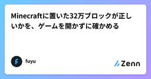
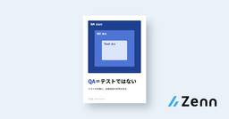

Zennの「Test」のフィード
フィード

Excelのテスト仕様書からJUnitの雛形を自動で作る：AIに単体テストを書かせる前の「下ごしらえ」ツールの設計
Zennの「Test」のフィード
業務のシステム開発では、テスト仕様書をExcelで書くことがよくあります。項番、テスト対象、観点、前提、入力、期待結果。1行が1つのテストケースです。そして、その仕様書を見ながら、JUnitのテストクラスを手で作ります。項番ごとにメソッドを作り、観点をコメントに写し、名前を付ける。数百行の仕様書だと、これだけでかなりの時間がかかります。AIに「この仕様書からテストを書いて」と頼む方法もあります。でも、数百行を一度に渡すと、抜けや取り違えが起きます。どの項番のテストを書いたのか、後から確かめるのも大変です。そこで、Excelのテスト仕様書から、JUnit 5のテストクラスの「雛形」を...
5時間前

【TLA+】AIにテストケースを書かせるな。ルールを書け
Zennの「Test」のフィード
「はて、このテストケース、誰が考えたんだっけ？ ほんとにだいじょぶ？」AIに頼めば、実装もテストも数秒で出て、CIが全部グリーンになってApproveボタンを押そうとしたとき、ふと手が止まりました。なんか嫌な予感。。。実装を書いたのはAIレビューしたのもAIテストを書いたのも同じAIま、だいじょぶでしょ！(大丈夫じゃない)えぇい、ままよ！ マージしちゃえ！問い: AIがコードもテストも書く時代に、テストはどう変わるのか？結論: 人間は「テストケース」を書くのをやめて、「守るべきルール」を書く理由: テストケースを考えるのは機械のほうが得意で、ルールを決められる...
6時間前

AWS EmulatorをMacで動かす本を書きました
Zennの「Test」のフィード
検証のたびに実AWSのアカウントを使うことに、以前から不安がありました。課金も気になりますが、それ以上に怖いのが操作ミスです。環境変数の設定を間違えたままコマンドを実行すれば、ローカルで試しているつもりが実AWSのリソースを触っていた、ということも起こり得ます。そこで、AWS公式のローカルエミュレータ「AWS Emulator」をMacで試してみました。最初に手こずったのは、起動するまでの準備です。完成済みのDockerイメージは配布されていないため、公式のDockerfileを使って自分でビルドする必要があります。Apple Siliconではaarch64、Intel Macでは...
18時間前

JaSST'26 Kyushuにきました🍜
Zennの「Test」のフィード
毎年九州で秋頃開催されているJaSST Kyushuに参加しました。初めての現地参加です🏃♀️ 概要2007年から開催され、九州各県で開催されています。沖縄回などもあるので今年はどこかなとそわそわしていましたが、福岡でした。https://jasst.jp/kyushu/26-about/会場は福岡ファッションビルの8階です。今回は会場後ろにコンセントの充電エリアとお土産エリアあり。最寄りは福岡市地下鉄空港線の祇園ですが、博多駅から地下通路があるのでそれなりに来やすかったです。 当日レポ スポンサーセッションからJaSST Kyushuは大部屋で１レーンのみなので、...
1日前
Swift Testing の .timeLimit を実測した： 秒は指定できず、制限はテストごとに効く
Zennの「Test」のフィード
こんにちは、Mochiです。Swift Testing には、テストに時間制限を付ける Traits の .timeLimit があります。資料によっては「秒指定は非推奨」などと書かれていて、実際の挙動がどうなのか気になったので、手元で動かして確かめました。検証した環境は Xcode 27.2 と Xcode 27.3 beta で、結果はどちらも同じでした。SwiftPM のテスト用パッケージを作り、swift test で実行しています。日付は 2026年11月 です。 この記事の結論時間の指定は分単位だけです。秒やミリ秒を指定すると、警告ではなくコンパイルエラーになり...
1日前

AIに作らせた経理アプリ3本を22項目で測ったら、穴は「コード」ではなく「運用」に集まっていた
Zennの「Test」のフィード
先に結論素人の依頼文だけでAIに作らせた経理アプリ3本を、同じ22項目の物差しで測りました。修正前は 3本で25件（8／8／9件）の不足が見つかりました。アプリの中の守り（他人のデータを読ませない、SQL注入、CSVの式混入、トークンの期限）は、3本とも最初から通過していました。落ちたのは運用の側です。総当たりの制限、テスト、ログ、バックアップ、DBの行単位の権限、DBへの接続権限、依存の版の固定、画面側の依存の既知脆弱性。この8項目は 3本すべてで不合格 でした。別のAIに直させた後は、物差しの上で 1件／0件／0件。残った1件は検査側の誤検知でした。ただし「物差しが...
1日前

AIが書いたコードを読む練習2：平均を求める関数が`None`を返すのはなぜ？
Zennの「Test」のフィード
def average(scores): """点数のリストから平均を返す。空のリストなら None を返す。""" if not scores: return None return sum(scores) / len(scores)点数のリストから平均を求めるPythonの関数を書いてとClaudeに頼んだら、上記のコードが返ってきました。 はじめにaverage([60, 80, 100])は80.0。では、average([])は？ 関数の先頭にある説明文（docstri...
1日前

Minecraftに置いた32万ブロックが正しいかを、ゲームを開かずに確かめる
Zennの「Test」のフィード
Minecraftに置いた約32万ブロックが正しいかを、ゲームの画面を開かずに確かめた方法を書きます。zipの中身をPythonで照らし合わせる方法と、公式のサーバー版にRCONでコマンドを送って1個ずつ数える方法です。 はじめに文字や画像や風景を、立方体 (ボクセル) の立体に変えるツール「ボクセル工房」を作っています。作った立体は、マインクラフト (Java版) のデータパックとして保存できます。https://fu-yu.github.io/voxel-maker/!ボクセル工房のプログラムと、この記事の文は、Claude (AnthropicのAI) と対話しながら作...
1日前

【CloudNative Days Winter 2026】参加メモ
Zennの「Test」のフィード
はじめにCloudNative Days Winter 2026に参加してきました！K8sやコンテナは業務で触らないので、前日にコンテナとK8sの本で急いで学習しました！！ゆるく感想とか書いていきます！イベント名：CloudNative Days Winter 2026開催日時：2026年11月18〜19日場所：有明セントラルタワーホール&カンファレンス公式Webサイトhttps://cloudnativedays.jp/ この記事で学べることクラウドネイティブ初心者がイベントに参加した感想 想定読者クラウドネイティブ初心者クラウドネイティブのイ...
2日前

リンク切れゼロでも、WordPressの静的化は終わっていなかった
Zennの「Test」のフィード
WordPressで運用していたコーポレートサイトを、静的HTMLへ移すことにしました。担当者が管理画面から更新する頻度に対して、WordPressを保守する手間が合わなくなっていたためです。既存のS3とCloudFrontで配信し、今後はHTMLをGitとPRで更新する形にします。最初の移行では、AIエージェントがWordPressのエクスポートXMLとテーマを読み、固定ページとニュースを静的ページへ起こしました。リンクや画像の欠損を調べる検査も、スマホとデスクトップのブラウザ確認も通っています。ところが、公開前に現行サイトと並べて比べると、上下のパンくずがない。ニュース一覧の1ペ...
2日前

AIが爆速で開発する時代の、自動テストとの向き合い方
1
Zennの「Test」のフィード
WebTerm Learnという、プロのエンジニアを目指す人のためのオンライン学習サービスを個人で開発しています。スライドで仕組みを学び、そのままブラウザの中のターミナルでコマンドを打って練習する、という形で学べます。ありがたいことに、いまは1日1校のペースで教育機関に導入していただいています！その一方で、バグを出してはいけないというプレッシャーも日に日に大きくなっています。生徒「あれ、正しいコマンドを打ってるはずなのに次に進まない…？」先生「おかしいな、確認したときは問題なかったんだけど…」授業で使われるサービスでは、この一言で授業が止まります。「また別の日にやりまし...
2日前
OTP 入力画面を「状態」でテストする：再送タイマー、SMS Retriever の5分タイムアウト、プロセス再生成を adb で確認
Zennの「Test」のフィード
（開示：筆者は DuoPlus で働いています。この記事は製品紹介ではなく手順の共有で、検証環境は末尾に書きました。）自社アプリの登録フローで、SMS の確認コード（OTP）を入力する画面は小さいわりに不具合が多い場所です。「コードが届く・入力できる」という正常系は誰でも確認しますが、問題になるのはだいたいその周辺です。再送タイマーが画面回転で 0 に戻る、バックグラウンドから戻ったら入力欄が空になる、5 分放置したら自動入力が二度と動かない、といった類いのものです。この記事では、OTP 画面を「状態の組み合わせ」として洗い出し、adb で再現しながら潰すためのチェックリストをまとめ...
2日前
動画の背景色を「画面の中央」で決めたら、紺の箱が背景になって検品が全部落ちた
Zennの「Test」のフィード
合格のはずの動画が、3 種類の検査で同時に落ちた前の記事で、縦動画の文字のはみ出しを ffmpeg と Python の標準ライブラリだけで検品する仕組みを書きました。静止画を灰色の生の画素で取り出し、背景と明るさが大きく違う画素を「点」として、画面の端や右の帯で数える検査です。その検査が、ある回のリールで次の 3 つを同時に出しました。画面の端で絵や文字が切れている右のボタンの下に文字がかかる左右の余白が 150px 未満（最小 約 0px）場面は、紺色の箱を 4 段に積んだ図です。人の目で見ると、左右には十分な余白があります。それでも検品は不合格を出し、自動の作り...
2日前

pstack 完全ガイド ─AIエージェントに雑なコード を書かせない技術─
47
Zennの「Test」のフィード
AIエージェントに仕事を頼むと、自信満々の報告と一緒に検証されていない大量のコードが届いて困ったことはありませんか？AIエージェントを使い始めた人はもちろん、日常的に使いこなしているエンジニアでも、「どうすれば品質を担保できるのか」「どこまで自律的に仕事を任せられるのか」という疑問は共通の課題ではないでしょうかpstack は、元React コアチームのエンジニア poteto（Lauren Tan）氏が、日々の開発で使っているスキルを公開したものです本書は、pstackの思想から実践までを体系的に解説した初心者から中上級者までを対象とする実践ガイドです。単なるスキルの使い方にとどまらず、AIエージェントの仕事の進め方そのものを見直し、検証可能で信頼できる開発ワークフローをどう構築するかまで踏み込みます。この本を読むと、明日からAIへの仕事の任せ方が変わります- 寝る前に仕事を頼み、朝には検証済みのPRが作成されている- AIの「直しました」を、実行結果や動作確認の証拠つきで受け取れる- コードレビューする必要性が減り、動画やスクショのチェックだけでマージできる (機械的な検証を自動化し、人間がレビューすべき範囲を減らせる)- 属人的なプロンプトの工夫から脱却し、再現性のある開発手順を構築できるpstackが目指しているのは、AIにたくさんコードを書かせることではありません。書く量を減らし、質を上げることです。そのために「証拠がなければ完了と認めない」「書いた本人に採点させない」「足す前に引く」といった考え方が、各スキルやプレイブックに組み込まれています。本書では、入口となる /poteto-mode の使い方とプロンプトの書き方から始め、22のプレイブック、34のスキル、24の原則を一つずつ解説します。さらに、似たスキルの使い分け、寝ている間にエージェントに仕事を任せる方法、日本語でそのまま使えるプロンプトのレシピ集、よくある失敗と対処法も収録しました。Cursor だけでなく、Claude Code で使うときの違いも説明しています。初心者にはpstackを迷わず使い始めるための入門書として、中上級者にはAIエージェントの運用や検証戦略を見直すための実践書としてオススメです
2日前

pytestのparametrizeで境界値テストを1つの表にまとめる
Zennの「Test」のフィード
点数を成績に変換する関数のテストを書くとき、つい「テスト関数をコピーして値を2つ書き換える」ことをしていませんか。ケースが増えるほどコピーも増えて、メンテナンスがつらくなります。この記事では、@pytest.mark.parametrize で境界値のテストを1つの表にまとめる方法を紹介します。 テスト対象grading.py という小さな関数を用意します。def grade(score): if not 0 <= score <= 100: raise ValueError(f"score must be between 0 and...
3日前

同じJSONを再インポートしたとき、保存件数は増えないか
Zennの「Test」のフィード
JSONバックアップを持つブラウザー拡張を作る方向けに、同じファイルの再インポートで重複が増えないか確認した手順をまとめます。開発者による検証記録です。合成データだけを使い、文章の整理には生成AIを利用しました。 検証した環境と範囲2026年11月18日（UTC）、Microsoft Edge Add-onsからインストールしたTabwell 1.1.6を通常のプロファイルで操作しました。開発者モードはオフ、UIは英語です。画面にはProの試用期間が14日残っていると表示されていました。既存データは、前の検証で取り込んだ合成スナップショット1件だけです。オートスナップショット、...
3日前
テストを実行せずに、テストが呼ぶ関数を割り出す
1
Zennの「Test」のフィード
AIエージェントにテストを弱めさせないチェッカー「hadome」を作っています。テストが呼んでいる関数の集合 を「守っている範囲」として、変更の前（base）と後（head）で比較します。その結果、範囲が狭まったときだけ後退として止めてくれるツールです。この記事は、その「テストが何を呼んでいるか」の割り出し方の話です。hadomeはテストを実行せず、ソースを読むだけで割り出します。 テストを実行しない理由テストが何を呼んでいるかを知りたいなら、テストを動かしてカバレッジを取るのがいちばん素直です。テストを動かさずに読むことにしたのは、次の3つの理由からです。変更のたび...
3日前

AIが書いたコードを読む練習1：素数判定の「正しさ」をどう確かめる？
Zennの「Test」のフィード
素数判定のコードに、i += 6。 なぜ、6ずつ進めるの？ はじめにdef is_prime(n: int) -> bool: if n < 2: return False if n < 4: # 2, 3 return True if n % 2 == 0 or n % 3 == 0: return False i = 5 while i * i <= n: # 6k±1 の形だけ調べる if n % i == 0 or n % (...
3日前

AIが書いたAPI、動作確認まで完走させる（テスト自動生成と自己修正）
Zennの「Test」のフィード
はじめにAPI実装はAIエージェントに任せると数分で実装が完了しますが、「本当にすべてのエンドポイントが動作するか」の確認は人の手で行っているケースも少なくないのではないでしょうか。この記事では、その確認までエージェントに任せる手順を紹介します。使うのは、私たちNITIがMITライセンスで公開したCLI「Ajiro API（ajiro-api）」です。読み終えると、次の3つができるようになります。既存のAPIから、エンドポイントごとのテストケースを自動作成AIエージェントが実装のあとにテストを回し、失敗を自分で修正同じテストをGitHub Actionsでも回す ...
3日前

QA＝テストではない――テストの外側に、品質保証の世界がある
Zennの「Test」のフィード
「QA＝テスト」の思い込みを解きほぐし、テスト以外のQA活動を体系的に紹介する。品質定義ワークショップ、テスト戦略、AI時代の分業、品質組織のつくり方まで、現場で試して効果があった方法をまとめた一冊。
3日前